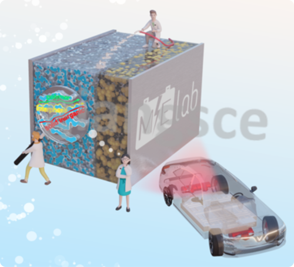

|
Education
Chonnam National University,
Gwangju, South Korea
M.S.-Ph.D. candidate in Materials Science and Engineering
Dissertation: Composite Solid Electrolytes for High-Performance Room-Temperature Solid-State Batteries (Presentation file
|Request full-text)
Advisor: Prof. Chan-Jin Park
Hanoi University of Science and Technology,
Hanoi, Vietnam
B.S. in Inorganic Compound Technology, School of Chemical Engineering
Thesis: Synthesis of Co-doped Zn2SiO4 inorganic pigment via solid-state reaction (Request full-text)
Advisor: Prof. Le Xuan Thanh
B.E. in Organic and Petrochemical Technology, School of Chemical Engineering
Thesis: Simulation and optimization of pressure drop in pipelines to Vung Tau Gas Distribution Center, Vietnam (Request full-text)
Advisor: Dr. Nguyen Anh Vu
Other projects:
1. Optimization of synthesis conditions of titanium dioxide from ilmenite using sulfate method
(Request full-text)
2. Simulation and optimization of the manufacturing process of 1,2-dichloroethane with a capacity 150 000 tons/year by azeotrope distillation using Aspen HYSYS
(Request full-text)
3. Simulation and optimization of the low-temperature condensation technology for natural gas processing using Aspen HYSYS
(Request full-text)
*All full-texts during my undergraduate are in Vietnamese
|
|
Research
My research focuses on developing novel concepts of the solid electrolyte, alloying anode, and sulfur cathode materials for better rechargeable batteries.
I am also interested in deeply understanding the mechanism behind these materials through the lens of computational chemistry.
Representative papers are bolded
(† equal contribution)
|

|
14. Challenges and design strategies for alloy-based anode materials toward high-performance future-generation potassium-ion batteries
Review article
An-Giang Nguyen, Rakesh Verma*, Pravin N. Didwal, Chan-jin Park*
Energy Materials, 2023, 3, 300030
Open Access
|
|

|
13. In-situ Polymerization on a 3D Ceramic Framework of Composite Solid Electrolytes for Room-Temperature Solid-State Batteries
An-Giang Nguyen, Rakesh Verma, Geon-Chang Song, Jaekook-Kim, Chan-jin Park*
Advanced Science, 2023, 2207744
IF2021 = 17.521 |
Open Access
|

|
12. Insights into tailoring composite solid polymer electrolytes for solid-state lithium batteries
Review article
An-Giang Nguyen, Chan-jin Park*
Journal of Membrane Science, 2023, 675, 121552
IF2021 = 10.53 |
Full-text
|

|
11. Non-aqueous Electrolytes in Metal-Air Batteries
A chapter in "Metal-Air Batteries: Principles, Progress, and Perspectives” Book
Pravin N. Didwal,† An-Giang Nguyen,† Satyanarayana Maddukuri, Rakesh Verma*
CRC Press
Full-text
|

|
10. Conductive metal organic framework mediated Sb nanoparticles as high-capacity anodes for rechargeable potassium-ion batteries
Aqsa Nazir, Hang T. T. Le, An-Giang Nguyen, Jaekook Kim, Chan-Jin Park*
Chemical Engineering Journal, 2022, 450, 138408
IF2021 = 16.744 |
Full-text
|

|
9. In-situ synthesis of antimony nanoparticles encapsulated in nitrogen-doped porous carbon framework as high performance anode material for potassium-ion batteries
Rakesh Verma, An-Giang Nguyen, Pravin N. Didwal, Chae-Eun Moon, Jaekook Kim, Chan‐Jin Park*
Chemical Engineering Journal, 2022, 446, 137302
IF2021 = 16.744 |
Full-text
|

|
8. Stabilizing interface of novel 3D-hierarchical porous carbon for high-performance lithium–sulfur batteries
Duc-Luong Vu, Do-young Kim, An-Giang Nguyen, Chan-Jin Park*
Electrochimica Acta, 2022, 418, 140369
IF2020 = 6.901 |
Full-text
|
|
|
7. Improving Cyclability of All-Solid-State Batteries via Stabilised Electrolyte–Electrode Interface with Additive in Poly(Propylene Carbonate) Based Solid Electrolyte
Pravin N. Didwal, Rakesh Verma, An-Giang Nguyen, Hari Vignesh Ramasamy, Gwi-Hak Lee, and Chan-Jin Park *
Advanced Science, 2022, 9, 2105448
IF2020 = 16.806 |
Open Access
|

|
6. Boosting sodium-ion battery performance using an antimony nanoparticle self-embedded in a 3D nitrogen-doped carbon framework anode
An-Giang Nguyen,
Hang T.T.Le, Rakesh Verma, Duc-Luong Vu, Chan-Jin Park*
Chemical Engineering Journal, 2022, 429, 132359
IF2020 = 13.273 |
Full-text
|

|
5. Reinforcing effect of single-wall carbon nanotubes on the LiNi0.6Co0.2Mn0.2O2 composite cathode for high-energy-density all-solid-state Li-ion batteries
Min-Hong Woo, Pravin N. Didwal, Hee-Joong Kim, Jin-Sub Lim, An-Giang Nguyen, Chang-Soo Jin, Duck Rye Chang,* Chan-Jin Park*
Applied Surface Science, 2021, 568, 150934
IF2020 = 6.707 |
Full-text
|

|
4. Composite solid electrolyte comprising poly(propylene carbonate) and Li1.5Al0.5Ge1.5(PO4)3 for long-life all-solid-state Li-ion batteries
Bong-Jun Sung, Pravin N. Didwal, Rakesh Verma, An-Giang Nguyen, Duck Rye Chang, Chan-Jin Park*
Electrochimica Acta, 2021, 392, 139007
IF2020 = 6.091 |
Full-text
|

|
3. Graphene analogue metal organic framework with superior capacity and rate capability as an anode for lithium ion batteries
Aqsa Nazir, Hang T. T. Le, An-Giang Nguyen, Chan-Jin Park*
Electrochimica Acta, 2021, 289, 138750
IF2020 = 6.091 |
Full-text
|

|
2. SnSe nanocomposite chemically-bonded with carbon-coating as an anode material for K-ion batteries with outstanding capacity and cyclability
Rakesh Verma, Pravin N. Didwal, An-Giang Nguyen, Chan-Jin Park*
Chemical Engineering Journal, 2021, 421, 129988
IF2020 = 13.273 |
Full-text
|

|
1. Biowaste Orange Peel‐Derived Mesoporous Carbon as a Cost‐Effective Anode Material with Ultra‐Stable Cyclability for Potassium‐Ion Batteries
Rakesh Verma, Yashabanta N. Singhbabu, Pravin N. Didwal, An-Giang Nguyen, Jaekook Kim, Chan‐Jin Park*
Batteries & Supercaps , 2020, 3, 1099-1111
IF2020 = 7.093 |
Full-text
|
|
Activity
Jun 2023: Oral Presentation at 243rd Electrochemical Society (ECS) Meeting, Boston, United States
Apr 2023: Poster Presentation at Korean Electrochemical Society (KECS), Spring Meeting, Jeju Island, South Korea
Oct 2022: Poster Presentation at 242nd Electrochemical Society (ECS) Meeting, Atlanta, United States
Jun 2022: The 1st FIT4NANO Summer School (FIB instrumentation and application, Ion solid interaction, Advanced simulation tools) (virtual)
Jun 2022: Poster Presentation at Korean Battery Society Meeting (KOBS), Spring Meeting, Ilsan, South Korea
May 2022: The 14th Annual FIB SEM Meeting, Laurel, Maryland, United States (virtual)
Apr 2022: Poster Presentation at Korean Electrochemical Society (KECS), Spring Meeting, Jeju Island, South Korea
Nov 2021: The 3rd POLYSTORAGE workshop: Polymer electrolytes and ionic liquids for energy storage, Ulm, Germany (virtual)
Nov 2021: Best Poster Presentation Award at Korean Battery Society Meeting (KOBS), Fall Meeting, Jeju Island, South Korea
Sep 2021: Poster Presentation at 72nd Annual Meeting of the International Society of Electrochemistry (ISE), Jeju Island, South Korea
Aug 2021: The 7th LAMMPS Workshop and Symposium (virtual)
May 2021-present: Review for Journal of Energy Chemistry
May 2021: Oral Presentation at Korean Institute of Metals and Materials (KIM+), Spring Meeting, South Korea
Apr 2021: Poster Presentation at Korean Electrochemical Society (KECS), Spring Meeting, Busan, South Korea
Feb 2021: The 7th Virtual Winter School on Computational Chemistry (virtual)
Oct 2020: Best Poster Presentation Award at Korean Institute of Metals and Materials (KIM+), Fall Meeting, South Korea
|
|
Thanks Jon Barron for his awesome design and source code
|
|